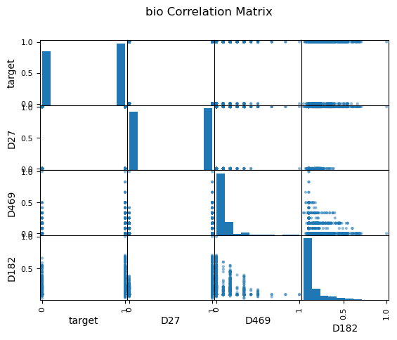
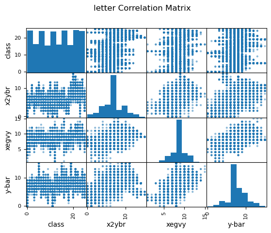

I worked on the machine learning algorithm comparison project during the spring 2023 semester for Georgia Tech's CS7641 (Machine Learning) class. The repository is available on github. It contains a jupyter notebook that documents observations on the varying strengths and weaknesses of four supervised machine learning algorithms; Decision Trees, K-Nearest Neighbors, Support Vector Machines, and Neural Networks.
For this project I worked with two unique datasets that were chosen based on their presumed differences in classifier performance. The bioresponse dataset is a wide, balanced binary classification problem. The letter dataset is a long and unbalanced multilabel problem.
The use case of our bioresponse model would be in the pharmaceutical industry where molecular components are chosen for synthesis to form greater compounds, in which case an engineer would choose only components that elicit the firing, or positive, response. The primary concern in this workflow is false positives, so we measured the performance of the results using precision.
Our letter data is a multi-class dataset, so our goal was to look at the classifiers ability to differentiate between class labels while maintaining a reduction in error of all positive and negative outcomes. To achieve this goal, we looked at Matthew's Correlation Coefficient and Area Under the Reciever Operating Characteristic (ROC) Curve.


Feature comparison histograms for exploratory data analysis of bioreponse and letter datasets.
Decision tree model complexity for bioresponse data increased with depth and number of splits. Validation precision increased until a max depth of 7 (a), and minimum samples per leaf of 39 (d). We can see a similar trend when varying the number of minimum samples per split (b), but after tuning our model's depth and samples per leaf, the minimum samples per split does not effect precision (e). This implies that the model is already effectively pruned and will no longer change with additional forms of pruning.
The small margin between the learning curves after applying the same hyperparameter tuning (e) represents the reduction in variance, or overfitting, from the original learning curves (c), with increased performance which indicates that the model did not experience underfitting or increased bias as a trade-off. We can also see a slight upwards trend in the validation line, indicating that variance may reduce further as we add additional samples.
Decision tree validation curves for bioresponse data while varying maximum tree depth (a), minimum number of samples needed to split a leaf (d) and minimum samples needed to split a branch (b and e). Plot (e) shows results after hyperparameter tuning. Learning curves show response before (c) and after (f) hyperparameter tuning.
With the letter data, class distinction decreased after depth 12 due to overfitting (d), while correlation increased with depth until showing asymptotic behavior around depth 17 (a). I tuned the final model to the average of the two, 15, to leverage both. I imposed no limit on the minimum samples per leaf, after observing that class distinction is only slightly improved while leaf minimum increases. But, this comes at a significant cost to correlation (b and e).
The tuned learning curve (c and f) have a relatively large margin (0.1) for correlation at the maximum number of samples showing that the model is overfit, but they trend towards convergence so we may see improved performance and a reduction in variance with more samples. This model shows extreme overfitting in class distinction, likely due to the multi-class label.
Decision tree validation curves for letter data while varying maximum tree depth (a, d) and the minimum samples needed to split a leaf (b, e), and learning curves with applied hyperparameter tuning of maximum depth (c, f).
For the bioresponse data, I noted minimal changes in performance between distance metrics (a) but chose to tune the final model to city block distance, which corresponds to Manhattan distance, which had slightly higher precision. The number of neighbors plot (b) shows us that the precision is greater with an even numbers of neighbors, which is atypical of this model where an even number of neighbors for comparison often leads to a tie in samples at the decision boundary.
We can see a decrease in overfitting from 4 (c) to 6 (d) neighbors as the margin between the training and validation set grew smaller with a minimal decrease in performance. We can also observe an uptick in the rate of increase of validation precision between 90 and 100 samples, which when combined with the asymptotic behavior of the training precision indicates that the performance and fit of the model may continue to improve with more samples.
K-nearest neighbors validation curves for bioresponse data while varying distance metric (a) and number of neighbors (b), and learning curves tuned to 4 (c) and (d) 6 neighbors.
For the letter data, we can see that the minkowski metric, or euclidean distance, lead to a model with higher correlation and class distinction (a and e). This may be a result of the multi-classification problem with a greater number of decision boundaries, as compared to the binary classification for the bioresponse data, where the city block distance resulted in the least amount of error. We can observe an increase in class distinction and a decrease in precision as the number of neighbors increases (b and f).
I limited the model to 15 neighbors (d and h) as compared to 5 neighbors (c and g). We can see that this results in a bias-variance trade-off for correlation where the margin is smaller, meaning we have reduced variance, at the cost of increased bias where our model correlation performance slightly decreases. However, for the class distinction we had a smaller margin with a performance increase, meaning that we have reduced variance with no bias trade-off. This is ideal for our problem as we are looking to tune the model to both performance metrics.
K-nearest neighbors validation curves for letter data while varying distance metric (a) and number of neighbors (b), and learning curves tuned to 5 (c) and 15 (d) neighbors.
The bioresponse and letter data showed similar responses when changing kernel type (a and e), with highest performance using a polynomial kernel. This is expected because they are not linearly separable due to the previously described complexity of each data set, but the increased performance comes at the cost of overfitting, which we can see from the gap between the training and validation curves. I attempted the radial basis function kernel to reduce variance, but opted for the polynomial kernel in the final models due to time considerations where the radial basis function ran roughly three times as long.
The degree controls the flexibility of the decision boundary and increases with performance for both problems. The bioresponse data has a more complex boundary line which causes the model to overfit the data more with the increase of this parameter (d), as compared to the letter data (h) which doesn't show significant overfitting until after a degree of 3. Similarly, we see increased performance with increased variance while increasing the parameter C, which controls the size of the desired margin (b and f). As the margin decreases, the model is left with more room to overfit the data set.
Support vector machine validation curves while varying kernel type, kernel coefficient 0, C and degree for bioresponse data at (a, b, c, d) and letter data (e, f, g, h).
I took a closer look at the validation curve responses by generating learning curves while varying C for the bioresponse data from 4 (a) to 0.5 (b) and degree for the letter data from 4 (c) to 2 (d). For the bioresponse data I observed a decrease in the precision of the training curve which more closely tracks the shape of the validation curve, verifying that there is a reduction in variance. The training curve however trends downward, limiting the possibility of an increase in precision with additional data. We can see a reduction in variance for the letter data as well, but at the cost of increased bias. The upwards trend of both curves imply that the model may improve with further tuning and additional samples.
Support vector machine learning curves for bioresponse data at C 4 (a) and 0.5 (b) and letter data at degree 4 (c) and 2 (d).
The data sets were not large enough to elicit any changes in performance with multiple layers, so we looked at variations in the width of a single hidden layer. The bioresponse data precision increased marginally with layer width at the cost of increasing complexity, due to the relatively small length of the dataset, and therefore to limit model overfitting I tuned the final model to a width of 80. We see an expected significant increase in performance with respect to width for the letter data, which contains roughly 6 times the amount of records. The model performance increases further as additional width is added to the layer, at the cost of significant time increases due to the backpropogation of the model. To reduce time complexity, I limited the layer to a width of 100 units.
We can see that the highest performing activation function for our bioresponse data is ReLU, a function known to minimize the vanishing gradient effect which may be an indication that this is more prevalent in data sets with a large number of features, as compared to the letter data which performed best with a Tanh function. The best performing solver for both data sets was adam, a modernized form of stochastic gradient descent, which came at a large increase in variance for the bioresponse data. Because of this, I chose to use stochastic gradient descent or 'sgd' for our final model.
Neural network validation curves for bioresponse and letter data while varying the first hidden layer width (a, e), activation function (b, f), solver (c, g). Learning curves for bioresponse (d) and letter data (h) after tuning.
The loss curves for our neural networks both decrease over time, showing us that the models are effectively learning. The loss for each continues to decrease with additional iterations and shows a downtick at the end of each plot, telling us that the model is currently underfit and that additional iterations may increase performance.
Next we might consider the learning rate. If the learning rate were too high, the curves would oscillate which would imply that the stochastic gradient solver is taking large steps in the direction of the gradient and overshooting the local minima. We can see that the the loss curves are both smooth, which tells us that the learning rates are optimally tuned.
Training loss curves for bioresponse data (left) and letter data (right).
The final performance for each model is shown in the table where we see siginificant changes in final testing data scores and wall-clock times between datasets. We see that for the bioresponse data set, support vector machines and neural networks took the longest, with a slightly higher score for neural networks. For the highest performance, we would likely use neural networks for a similarly structured wide data set with many features. For the bioresponse data, K-nearest neighbor was the fastest while comparatively took the longest to fit the letter data, from which we can derive that that the length of data set was not ideal for this model. Comparatively, decision trees were faster by a significant margin.
Final model performance using wall-clock time and sklearn performance score metrics.